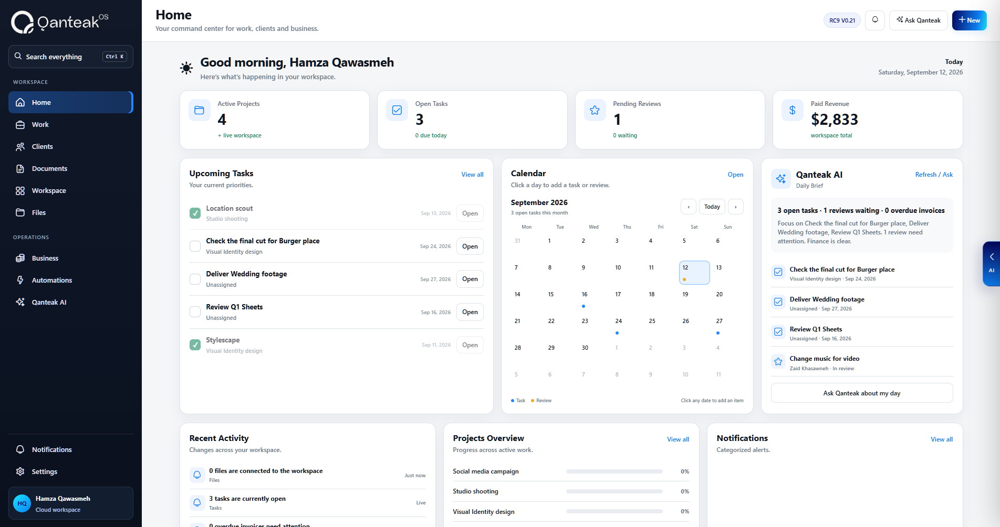

QANTEAK OS · V0.25 The connected workspace is getting deeper Your work. Your business.
Your work. Your business.
One workspace.
Plan the work, manage clients, keep knowledge and files connected, understand the business, and use AI with real workspace context.
Built for people who actually have work to run.

ONE WORKSPACE. MANY WAYS TO WORK.
Freelancers · Consultants · Agencies · Small businesses · Teams
THE PROBLEM IS THE GAPS BETWEEN TOOLS
Work should not require ten different apps.
Your project plan, client context, files, feedback, invoices and AI should not live as separate stories. Qanteak connects them so the next action has the context behind it.
See how Qanteak connects the workflowCONNECTED BY DESIGNEverything in its place.
Everything in its place.
Everything working together.
Your project is more than a list of tasks. Give every part of the work a shared home.
01
Projects with the whole picture.
Tasks, deadlines, briefs and files stay connected to the project they belong to.
Explore feature02
Every client. Every detail.
Keep the relationship and the work together—from the first conversation to delivery.
Explore feature03
Knowledge where you need it.
Give documents, decisions and meeting notes a home inside your work.
Explore featureFROM BIG PICTURE TO SMALL DETAILSA clearer view.
A clearer view.
A calmer workday.
Plan the next move, find the right file, or see what needs your attention. Qanteak keeps the important things close.
TO DO 2StrategyDefine the launch storyStudio North · Sep 22 Gather brand referencesCreative direction
JD
IN PROGRESS 1DesignA new visual direction
3 files · 2 comments
DONE 1ApprovedCreative briefReady for the next step
WORK MANAGEMENT
Make progress feel natural.
Lists, boards, calendars and timelines. The same work, seen your way.
INVOICE #QT–024Good work.
Good work.
Ready to bill.
Brand identity $2,400
Creative direction $800
Total $3,200
Connected to Studio NorthBUSINESS OPERATIONS
Connect delivery to the business.
Clients, projects, estimates and invoices belong in the same conversation.
The next big idea.
Brand strategy / Creative brief
Linked to Studio North rebrand
DOCUMENTS & KNOWLEDGE
Keep the thinking with the doing.
Briefs, notes and decisions stay close to the people who need them.
What needs my attention this week?
A little more context. A lot more clarity.
Bring related projects, notes and decisions into one Context Space.
Projects Documents Clients
QANTEAK INTELLIGENCE
AI with a sense of context.
Explore the foundation for an assistant that understands how your work connects.
ONE CONTINUOUS WORKFLOWThe details connect.
The details connect.
The work moves forward.
From your first conversation to your final invoice, keep the story of the work intact.
01
Meet the client.
Keep contacts, conversations and opportunities in one place.
02
Shape the project.
Turn the brief into a plan with tasks, owners and clear deadlines.
03
Deliver with clarity.
Connect working files, feedback and approvals to the project.
04
Close the loop.
Link the invoice back to the client and the work that earned it.
THE QANTEAK SYSTEM
One connected story from first contact to final payment.
Every object can carry context forward instead of making you rebuild it in the next tool.
01Lead
02Client
03Project
04Tasks
05Files & docs
06Review
07Invoice
08Payment
Qanteak AI sees the relationships.
Explore Qanteak AI Ask what needs attention, prepare a plan, and review supported actions before they are applied.
BUILT FOR REAL OPERATIONSFlexible enough for your process.
Flexible enough for your process.
Connected enough to stay useful.
Freelancers, agencies, consultants, small businesses and teams can shape the workspace around the way they already operate.
Find your workflowFreelancer
Client → Work → InvoiceAgency
Accounts → Delivery → ReviewConsultant
Knowledge → Projects → ReportsTeam
Requests → Ownership → Progress
Client → Work → InvoiceAgency
Accounts → Delivery → ReviewConsultant
Knowledge → Projects → ReportsTeam
Requests → Ownership → Progress
CONTROL WITHOUT THE FRICTION
Connected does not mean out of control.
Qanteak is designed around clear permissions, visible activity, recoverable changes and confirmation before important AI actions.
Permission-aware
Workspace roles and access rules stay between users and sensitive records.
History you can trace
Comments, activity and versions make important changes easier to understand.
AI asks before acting
Supported multi-step plans are reviewed before Qanteak applies internal changes.
Make room for
your best work.
One place for the details. More space for the bigger picture.
Create your accountExplore the product